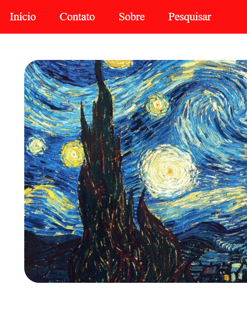
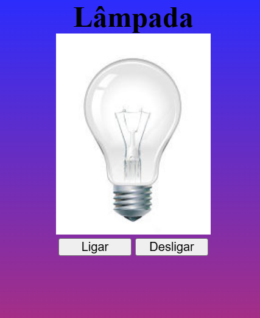
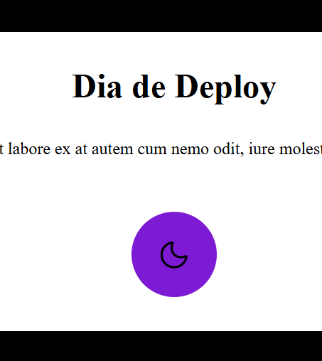
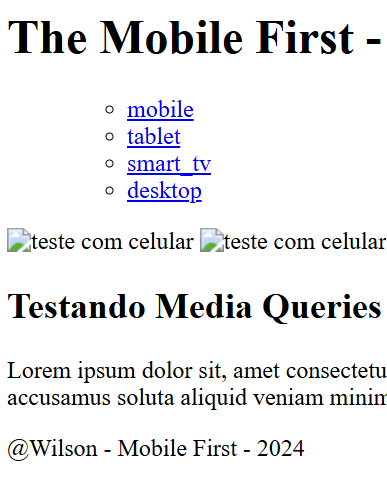

MEU PORTFOLIO
1. Me chamo Wilson, sou estudante de Web Design, em busca de criar experiências digitais que unem estética, funcionalidade e usabilidade.
Ao longo da minha formação, venho desenvolvendo habilidades em HTML e CSS.
Estou em constante evolução, aprendendo novas tecnologias. Meu objetivo é transformar ideias em interfaces intuitivas e visualmente
impactantes, contribuindo com projetos que valorizam tanto a identidade visual quanto a experiência do usuário.
2. Portfólio: ikigai é um conceito japonês que significa "razão de ser" ou "razão para viver".
Hard skills são habilidades técnicas aprendidas por meio de estudos, cursos ou treinamentos.
Soft skills são habilidades comportamentais, ligadas à forma como comporta-se perante outras pessoas e situações.
Me chamo Wilson e estou disposto a aprimorar minhas habilidades e competências.
Atualmente, possuo inglês intermediário e acredito que o aprimoramento de minhas
habilidades interpessoais e técnicas pode me ajudar a contribuir positivamente
enquanto pessoa.
Este projeto foi feito no Visual Studio Code, utilizando HTML para estrurar o código, com CSS para estilizar o site.
Nele, é possível ver uma galeria de imagens com descriçôes.

Este projeto foi feito no Visual Studio Code, utilizando HTML para estrurar o código.
Nele, é possível ver as descrições dos meus projetos.
Este projeto foi feito no Visual Studio Code, utilizando HTML para estrurar o código.
Nele, é possivel ligar e desligar a lâmpada ao clicar no botão.

Este projeto foi feito no Visual Studio Code, utilizando HTML para estrurar o código.
Nele, é possivel ativar e desativar o modo escuro ao clicar no botão.

Este projeto foi feito no Visual Studio Code, utilizando HTML para estrurar o código.
Nele, é possível ver o conceito de Mobile First.
